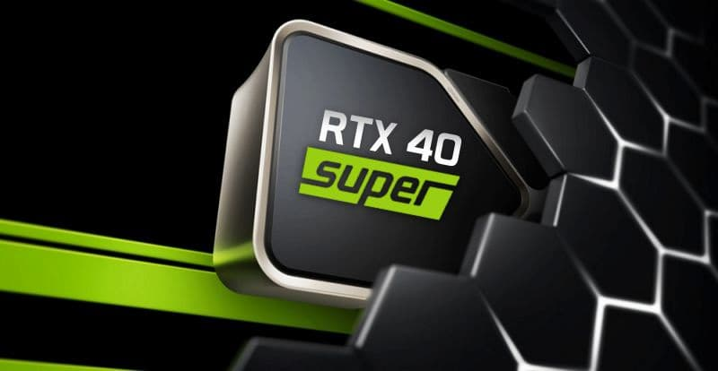

NVIDIA presentaría sus nuevas tarjetas gráficas durante el CES 2024
El fabricante de GPU tendría planeado mostrar sus próximas tarjetas durante la feria tecnológica más importante del año que viene.
Durante las últimas semanas surgieron algunos rumores en la red sobre las nuevas tarjetas gráficas de NVIDIA para su actual generación Ada Lovelace o RTX 40 Series, como prefieran llamarlas.
Ahora lo nuevo es la posible fecha en la que NVIDIA va a dar a conocer los próximos modelos de las 40 Series que serían los Ti o Super y que, según el conocido tuitero kopite7kimi, será durante el CES 2024, la conferencia tecnológica más importante de cada año que tendrá lugar del 9 al 12 de enero.
De momento, en la programación del evento NVIDIA no aparece como una de las compañías que van a tener su propio puesto en la feria, pero sí tiene tres conferencias programadas durante la misma de la que se desconocen las temáticas, así que una podría estar perfectamente reservada a presentar estas nuevas tarjetas gráficas.
La RTX 4080 Ti o Super sería la primera en llegar
Tras la presentación al público oficial por lo que parece la primera gráfica que llegaría sería la NVIDIA GeForce RTX 4080 Super o Ti, que debutaría en las tiendas a principios del año que viene y que usaría un chip AD102 con un consumo por debajo de los 450 W de la RTX 4090.
Además para el año que viene también está previsto que llegue un nuevo modelo de la NVIDIA GeForce RTX 3050 con 6 GB de memoria GDDR6 destinada a los equipos de gama de entrada.